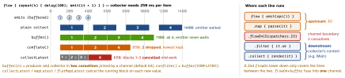

cross-platform · folio
In one line: A Flow is a cold, sequential stream: collect runs the
producer in the collector’s coroutine, each value passes every operator before the next
is produced, and the producer suspends while the collector works (natural backpressure). Two
rules make operators composable: context preservation (only flowOn changes
where upstream runs) and exception transparency (never emit from inside a
catch). Concurrency and hotness are opt-in: buffer, flowOn,
channels, stateIn/shareIn.
Download PDF Print view LaTeX source


The contract
- Intermediate ops (
map,filter,transform,onEach,debounce) return a newFlow, run nothing. Terminal ops (collect,first,single,toList,reduce) aresuspendand start it;launchIn(scope)=scope.launch { collect() }. - Context preservation:
emitonly from the collecting coroutine —withContext/launchinsideflow {}throwsIllegalStateException(“Flow invariant is violated”). Other threads/ coroutines →channelFlow/callbackFlow. - Exception transparency: if
emitthrows (downstream failed), stop and rethrow; never swallow it withtry/catcharoundemit. Usecatch {}— it sees upstream only and mayemita fallback. - Don’t implement
Flowyourself (not stable for inheritance) — useflow {}orAbstractFlow.
Combining
combine(a,b) | latest of each; first output once all have emitted; then on any emission — UI state from several sources |
zip(a,b) | pairs by index (1st with 1st); ends when either ends |
merge(a,b) | interleaves values as they come, no pairing |
flatMapConcat | inner flows one after another (order kept) |
flatMapMerge | inner flows concurrently, concurrency = 16 by default |
flatMapLatest | new outer value cancels the running inner flow — search box |
Errors & completion
retry(3) { it is IOException }/retryWhen { cause, attemptre-collect upstream (cold ⇒ re-runs the request).->… }onCompletion { cause: runs on success, failure or cancel, sees upstream and downstream errors, does not handle them.->}- Collector exceptions: move the work into
onEach, thencatch, thenlaunchIn.
Example — callback, search, screen state
fun LocationClient.updates(): Flow<Loc> = callbackFlow {
val cb = LocationCallback { loc -> trySend(loc) } // non-suspending
requestUpdates(cb)
awaitClose { removeUpdates(cb) } // REQUIRED: else ISE on close
}.conflate() // keep only the newest fix
val results = query // MutableStateFlow<String>
.debounce(300).distinctUntilChanged()
.flatMapLatest { q -> repo.search(q) } // old search cancelled
.catch { emit(emptyList()) }
val ui = combine(results, prefs) { r, p -> Ui(r, p) }
.stateIn(viewModelScope, SharingStarted.WhileSubscribed(5_000), Ui())Hot flows — the knobs
| StateFlow | SharedFlow (replay, extraBufferCapacity,
onBufferOverflow = 0, 0, SUSPEND) | |
|---|---|---|
| read | .value; update{} = CAS | replayCache |
| equal value | not emitted | emitted |
| slow sub | jumps to newest | buffer, then SUSPEND/DROP_OLDEST/DROP_LATEST |
| no subs | value kept | value lost unless replay > 0 |
DROP_OLDEST) + distinctUntilChanged
+ initial value; neither ever completes.
stateIn/shareIn: one cold upstream → one shared collection.Eagerly(now, forever),Lazily(1st subscriber, forever),WhileSubscribed(stopTimeoutMillis=0, replayExpirationMillis=MAX). Why 5 000: a rotation gap is far shorter, so upstream survives it; in background it stops after 5 s.- Channels (hot, each element to one receiver):
Channel()=RENDEZVOUS(0) ·BUFFERED(64) ·CONFLATED·UNLIMITED.callbackFlow/channelFlowbuffer 64;channelFlowmaylaunchconcurrent senders.
Testing
runTest: virtual time (delay/debounceskipped; 60 s timeout);advanceTimeBy/advanceUntilIdle; endless collectors inbackgroundScope;Dispatchers.setMain(testDispatcher).- Turbine:
flow.test { awaitItem(); awaitComplete() },expectNoEvents(). Assert aStateFlow’s values — conflation may skip some.
Traps
MutableSharedFlow<Event>()+tryEmit: with a subscriber it fails (no buffer) — setextraBufferCapacity, oremit.state.value = list.apply { add(x) }— same instance,equalstrue: nothing emitted. Publish a new value.fun items() = flow.stateIn(...)— a new shared coroutine per call; use aval.catchnever sees the collector’s own exceptions.
Remember: cold + sequential · flowOn = upstream · buffer splits, conflate drops, latest cancels.